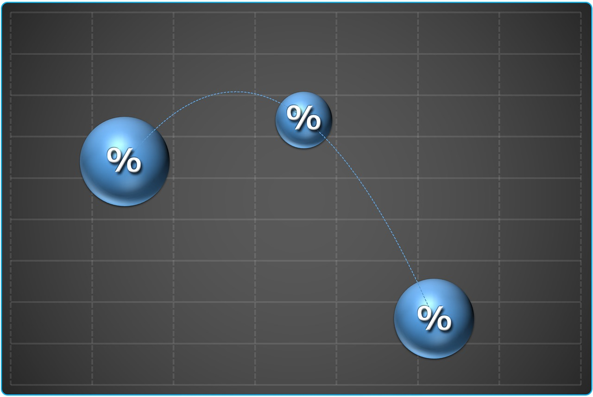
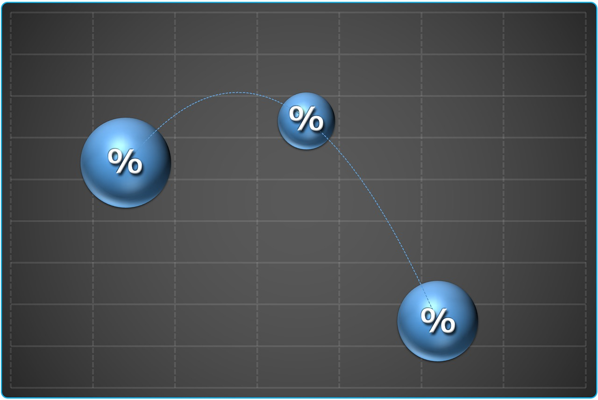

Bull Market
This typically consists of stocks that are doing well or stocks that will foreseeably increase in value over time. Please see below for stocks that usually appear on the ever changing bull market.
Facebook (FB)
Alphabet (GOOG)
Apple (AAPL)
Please click here for specific stock lookupscnbc.com
moneywatch
Bear Market
This pertains to stocks that are on a decline i.e. stocks that are losing value. One of the most common stocks that appear on the "bear market" is Coca Cola ticker symbol COKE (Nasdaq). According to many sources, Tesla (TSLA) showed up on the bear market quite a few times as well.
 

Information for Beginners
Stocks-can be volatile depending on how many shares are bought per day i.e. overall investor sentiment. Economic stances such as recessions and inflation will determine buying and trading. Please know that there are options to self manage stocks and that there is usually a flat rate fee that must be paid per trade when using an online trading service. On top of that, buying stock in Company X means that you are part owner of said company and are entitled to voting rights.
Mutual funds-consists of a variety of stocks and tend to range from $2000+. They are not so volatile because mutual funds are very liquidated meaning that the loss of value in one stock may not be felt due to the majority of stocks increasing in that fund. Mutual Funds are typically managed by some sort of investment banker, there is an added percentage fee taken out of your account and given to the broker.

A note to readers
I am not a certified financial analyst but enjoy researching investment opportunities in my free time :)